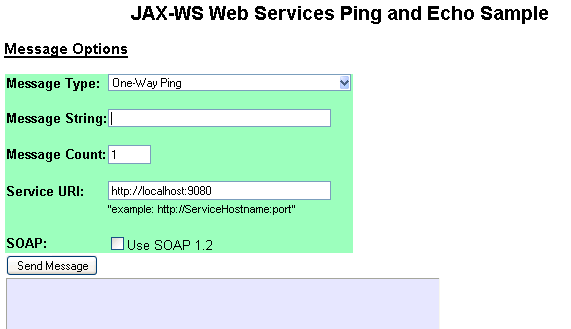
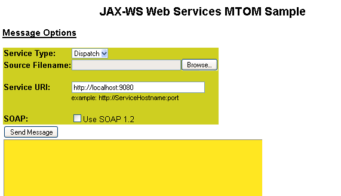

These samples demonstrate JAX-WS web services. The samples show the basic implementation of one-way and two-way web services. Included in each sample is a servlet that exercises the service using a browser, and a sample using the Thin Client for JAX-WS with WebSphere Application Server that you can run from a command line.
Approximately 15 minutes
COPYRIGHT LICENSE: This information contains sample code provided in source code form. You may copy, modify, and distribute these sample programs in any form without payment to IBM for the purposes of developing, using, marketing or distributing application programs conforming to the application programming interface for the operating platform for which the sample code is written. Notwithstanding anything to the contrary, IBM PROVIDES THE SAMPLE SOURCE CODE ON AN "AS IS" BASIS AND IBM DISCLAIMS ALL WARRANTIES, EXPRESS OR IMPLIED, INCLUDING, BUT NOT LIMITED TO, ANY IMPLIED WARRANTIES OR CONDITIONS OF MERCHANTABILITY, SATISFACTORY QUALITY, FITNESS FOR A PARTICULAR PURPOSE, TITLE, AND ANY WARRANTY OR CONDITION OF NON-INFRINGEMENT. IBM SHALL NOT BE LIABLE FOR ANY DIRECT, INDIRECT, INCIDENTAL, SPECIAL OR CONSEQUENTIAL DAMAGES ARISING OUT OF THE USE OR OPERATION OF THE SAMPLE SOURCE CODE. IBM HAS NO OBLIGATION TO PROVIDE MAINTENANCE, SUPPORT, UPDATES, ENHANCEMENTS OR MODIFICATIONS TO THE SAMPLE SOURCE CODE.
The following key phrases are associated with this sample: "web service", "JAX-WS"
The Ping and Echo sample illustrates simple JAX-WS services. The Ping sample demonstrates a one-way service transaction. A simple text string is sent from the service client to the service endpoint. The Echo sample demonstrates a two-way service transaction. A simple text string is sent from the service client to the service endpoint. The service prepends an identifier and returns the string to the client. The Echo sample also demonstrates the use of the synchronous programming model and the use of two modes of the asynchronous programming model.
You can choose either SOAP 1.1 or SOAP 1.2 as the transport option for the Ping and Echo samples.
The Ping and Echo sample uses many of the Java Platform, Enterprise Edition (Java EE) and WebSphere Application Server functions, including servlets and JavaServer Pages (JSP) technology.The MTOM sample illustrates the use of the SOAP Message Transmission Optimization Mechanism (MTOM) on the transport to send and receive binary files. SOAP bindings use the MTOM feature to optimize the transmission or format of how a SOAP message appears on the wire. The MTOM function selects and encodes portions of the SOAP message, and presents an XML Infoset to the SOAP application. Then, a file with the encoded binary data is sent from the service client to the service endpoint.
The MTOM sample uses many of the Java Platform, Enterprise Edition (Java EE) and WebSphere Application Server functions, including servlets and JavaServer Pages (JSP) technology.
To learn more about Java API for XML web Services (JAX-WS) web services, see the web Services documentation in the WebSphere Application Server Information Center.
The JAX-WS web Services Ping and Echo sample demonstrates simple message exchange patterns (MEP) using both a synchronous and asynchronous programming model. This sample supports both SOAP 1.1 and SOAP 1.2 and incorporates web services standards such as WS-Addressing (WS-A), WS-Reliable Messaging (WS-RM), and WS-Secure Conversation (WS-SC). Using this web Service sample, you can complete a broad range of interoperability tests. The sample demonstrates the use of static JAX-WS service endpoints, as well as dispatch and proxy-based clients.
For more information, see the WebSphere Application Server Beta Information Center.
The one-way request scenario demonstrates a one-way message exchange pattern to send a ping application message from a client to a service.
The two-way request and response scenario demonstrates a two-way message exchange pattern to send an application message from a client to a service and receives an echo string response from the server on the same request and response channel.
The two-way asynchronous request and response scenario demonstrates a two-way message exchange pattern that sends an echo string message from a client to a service and expects the echo string response from the server on the same request and response channel. Although this message exchange pattern is similar to the Sync Echo sample, this sample implements the JAX-WS asynchronous programming model. In this scenario, a request is made; however, the application can continue to do additional work. When a response is received, a callback handler routine is used to process the response. Over the wire, this sample is identical to the Sync Echo sample.
The two-way asynchronous request and response with asynchronous communication scenario demonstrates a two-way message exchange pattern to send an echo string message from a client to a service. The client expects the echo string response from the server on a different request and response channel. This sample implements the JAX-WS asynchronous programming model. In this scenario, a request is made to the service but the client application can continue to do additional work. When a response is received, a callback handler routine is then used to process the response. The client listens on separate channel to receive the response messages from a server initiated channel.
You do not have to build the JaxWSServicesSamples samples before using them. The following steps describe how to rebuild the JaxWSServicesSamples samples, with additional information for modifications.
The JaxWSServicesSamples samples are located in the following compressed file directories:
| Directory | Description |
|---|---|
| jaxWSServicesSamples/src/ | Contains the sample source code for the Ping, Echo and MTOM samples. |
| JaxWSServicesSamples/installableApps/ | Contains the Java archive (JAR) files, and the JaxWSServicesSamples.ear file for samples. This directory is not modified if this sample is rebuilt. |
| JaxWSServicesSamples/lib/ | Contains the web archive (WAR) files, the Java archive (JAR) files, and the final JaxWSServicesSamples.ear file for samples. This directory is created when this sample is rebuilt. |
| JaxWSServicesSamples/javadoc/ | Contains the samples Javadoc documentation. This directory is updated when this sample is rebuilt. |
| JaxWSServicesSamples/bld/ | Contains the generated class files. These class files are used to generate the final JaxWSServicesSamples.ear file. This directory is created when this sample is rebuilt. |
To rebuild the JAX-WS WebServices sample EAR file, complete the following steps:
export WAS_HOME=directory
set WAS_HOME=directory
export WAS_HOME=/opt/IBM/WebSphere/AppServer
scripts/buildsamples.sh
scripts\buildsamples.bat
The buildsamples scripts are located in the JaxWSServicesSamples/scripts directory. The scripts set the appropriate class path information and run the Ant build utility. The Ant utility reads the build.xml files, which describe how to build the samples. Refer to the Apache Ant web site for additional documentation on the Ant utility.
\WebSphere\AppServer70\bin\wsadmin.bat -conntype none -f samplesMaster.jacl -command install -samples JaxWSServicesSamples
The Ping and Echo samples are two simple JAX-WS web services.
The Ping sample demonstrates a one-way operation. A simple string value is passed to the service. The client operation is complete after it has contacted the service. Two endpoints exist in the sample. One endpoint uses SOAP 1.1 and the other endpoint uses SOAP 1.2.The Echo sample demonstrates a two-way operation. A simple string value is passed to the service. The service prepends an identifier string value and returns this value back to the client. There are two endpoints in the sample. One endpoint uses SOAP 1.1 and the other endpoint uses SOAP 1.2. The Echo sample also demonstrates the synchronous and asynchronous programming models, as well as synchronous and asynchronous over-the-wire behavior.
| Sample service endpoints URI | Description |
|---|---|
| http://localhost:9080/WSSampleSei/PingService | Ping service sample using SOAP 1.1 |
| http://localhost:9080/WSSampleSei/EchoService | Ping service sample using SOAP 1.1 |
| http://localhost:9080/WSSampleSei/PingService12 | Ping service sample using SOAP 1.2 |
| http://localhost:9080/WSSampleSei/EchoService12 | Ping service sample using SOAP 1.2 |
Before you begin, you must verify that the application server is running before you start the clients.
The Ping and Echo sample includes two services, Ping and Echo.
The Ping sample demonstrates a one-way service transaction. The source for this sample is located in the JaxWSServicesSamples/src/SampleClientSei directory.
The Echo sample demonstrates a two-way service transaction. The source for this sample is located in the JaxWSServicesSamples/src/SampleClientSei directory.
To run the Ping and Echo client servlet from WebSphere Application Server, complete the following steps:
The Ping and Echo thin client sample is similar to the Ping and Echo client servlet. This sample accesses the same Ping and Echo web services beans, but it uses a Java archive (JAR) file that requires the Thin Client for JAX-WS with WebSphere Application JAR file in the class path.
JaxWSServicesSamples/lib/
The Ping and Echo thin client sample creates a JAX-WS proxy for the Ping or Echo web service based on the parameters that you provide. The proxy then contacts the service endpoint with the message. The Echo sample waits for the response.
In the following steps, the variable, app_server_root, refers to the application server installation root.
To run the Ping and Echo thin client from a WebSphere Application Server, complete the following steps, based on your operating system:
set WAS_HOME=c:\WebSphere\AppServerOn operating systems such as AIX, Linux, and z/OS:
export WAS_HOME=/opt/IBM/WebSphere/AppServer
cd JaxWSServicesSamples\scripts\windowsOn operating systems such as AIX and Linux:
cd JaxWSServicesSamples/scripts/unix
runSampleSei.bat -h hostname -p port -f urlSuffix -m testMessage -s service -t timeout -w asyncwire -c count -1 -2On operating systems such as AIX, Linux, and z/OS:
./runSampleSei.sh -h hostname -p port -f urlSuffix -m testMessage -s service -t timeout -w asyncwire -c count -1 -2On iSeries operating systems:
./runSampleSei -h hostname -p port -f urlsuffix -m testMessage -s service -t timeout -w asyncwire -c count -1 -2
| Option | Description |
|---|---|
| -h <hostname> | Specifies the name of the host. The default is localhost. |
| -p <port> | Specifies the port number. The default value is 9080. |
| -f <urlsuffix> | Specifies the service endpoint context. The default is /WSSampleSei/EchoService |
| -m <message> | Specifies the text of the message. The default is hello. If the message contains blanks, use quotation marks around the message. |
| -c count | Specifies the number of transactions to run. The default is 1. |
| -1 | Specifies to use SOAP 1.1. The default is SOAP 1.1. |
| -2 | Specifies to use SOAP 1.2. |
runSampleSei.bat -p 9081 Jan 12, 2011 7:01:00 PM com.ibm.ws.ssl.config.SSLConfigManager INFO: ssl.disable.url.hostname.verification.CWPKI0027I >> CLIENT: SEI Async to http://localhost:9081/WSSampleSei/EchoService [WAShttpAsyncResponseListener] listening on port 4733 >> CLIENT: SEI Async invocation complete. >> CLIENT: SEI Async response is: JAX-WS==>>HELLOTo learn more about how the sample client and application work, see the Ping and Echo technotes or view the Java source code.
For more information about web services clients, see the documentation on developing and deploying web services clients in the WebSphere Application Server Information Center.
Enabling Reliable Messaging & SecurityPolicy set scripts
Policy sets are used to enable quality of service (QoS) such as
ReliableMessaging and SecureConversation. Policy sets that are
attached to an application define the quality of service for that
application. A set of scripts are provided to enable the policy
sets for WS-ReliableMessaging (WS-RM), WS-SecureConversation
(WS-SC) and WS-I Reliable Secure Profile (RSP). RSP is a
composition of both WS-RM and WS-SC. These scripts are provided as
examples. You can also enable Policy sets using the administrative
console. These scripts are designed to work with the sample
applications only. The following tables describe the Policy set
sample scripts.
| Filename | Description |
|---|---|
| enableRMQoS.bat | Enable WS-ReliableMessaging Version 1.1 |
| enableRM1QoS.bat | Enable WS-ReliableMessaging Version 1.0 |
| enableSCQoS.bat | Enable WS-SecureConversation |
| enableRSPQoS.bat | Enable WS-ReliableMessaging and WS-SecureConversation |
| enableWSAQoS.bat | Enable WS-Addressing |
| disableRMQoS.bat | Disable WS-ReliableMessaging Version 1.1 |
| disableRM1QoS.bat | Disable WS-ReliableMessaging Version 1.0 |
| disableSCQoS.bat | Disable WS-SecureConversation |
| disableRSPQoS.bat | Disable WS-ReliableMessaging and WS-SecureConversation |
| disableWSAQoS.bat | Disable WS-Addressing |
| Filename | Description |
|---|---|
| enableRMQoS.sh | Enable WS-ReliableMessaging Version 1.1 |
| enableRM1QoS.sh | Enable WS-ReliableMessaging Version 1.0 |
| enableSCQoS.sh | Enable WS-SecureConversation |
| enableRSPQoS.sh | Enable WS-ReliableMessaging and WS-SecureConversation |
| enableWSAQoS.sh | Enable WS-Addressing |
| disableRMQoS.sh | Disable WS-ReliableMessaging Version 1.1 |
| disableRM1QoS.sh | Disable WS-ReliableMessaging Version 1.0 |
| disableSCQoS.sh | Disable WS-SecureConversation |
| disableRSPQoS.sh | Disable WS-ReliableMessaging and WS-SecureConversation |
| disableWSAQoS.sh | Disable WS-Addressing |
| Filename | Description |
|---|---|
| enableRMQoS | Enable WS-ReliableMessaging Version 1.1 |
| enableRM1QoS | Enable WS-ReliableMessaging Version 1.0 |
| enableSCQoS | Enable WS-SecureConversation |
| enableRSPQoS | Enable WS-ReliableMessaging and WS-SecureConversation |
| enableWSAQoS | Enable WS-Addressing |
| disableRMQoS | Disable WS-ReliableMessaging Version 1.1 |
| disableRM1QoS | Disable WS-ReliableMessaging Version 1.0 |
| disableSCQoS | Disable WS-SecureConversation |
| disableRSPQoS | Disable WS-ReliableMessaging and WS-SecureConversation |
| disableWSAQoS | Disable WS-Addressing |
cd C:\samples\JaxWSServiceSamples\bin
set WAS_HOME=c:\WebSphere\AppServerOn operating systems such as AIX, Linux, and z/OS:
export WAS_HOME=/opt/IBM/WebSphere/AppServer
enableRMQos.bat
disableRMQos.bat
enableRMQoS.bat AppSrv02 MyServerNode01Cell MyServerNode01The following example demonstrates how to run the Disable WS-ReliableMessaging script with the optional profile, cell, and node parameters specified:
disableRMQoS.bat AppSrv02 MyServerNode01Cell MyServerNode01
./enableRMQoS.sh -user myuserid -password mypassword
To test the Ping and Echo thin client sample with the QoS policy sets, follow these guidelines.
set JAASLOGIN=-Djava.security.auth.login.config=<profile_root>/properties/wsjaas_client.confOn operating systems such as AIX, Linux, and z/OS:
export JAASLOGIN=-Djava.security.auth.login.config=<profile_root>/properties/wsjaas_client.confThe profile_root indicates the server directory where your profile is located, for example:
set JAASLOGIN=-Djava.security.auth.login.config=C:/IBM/WebSphere/profiles/AppSrv02/properties/wsjaas_client.conf
set CLASSPATH=%THIN_JAR%;./WSSampleClientSei.jar;.On operating systems such as AIX, Linux, and z/OS:
export CLASSPATH=${THIN_JAR}:./WSSampleClientSei.jar:.
Note: The period (.) is included at the end of the class path statement.
The period is included so the policy set loading code finds the
META-INF directory. Do not omit the period.java %JAASLOGIN% -DUSER_INSTALL_ROOT= "<profile_root>" -cp "%CLASSPATH%" com.ibm.was.wssample.sei.cli.SampleClient %*On operating systems such as AIX, Linux, and z/OS:
java ${JAASLOGIN} -DUSER_INSTALL_ROOT="<profile_root>" -cp "${CLASSPATH} " com.ibm.was.wssample.sei.cli.SampleClient $@
JaxWSServicesSamples/scripts/unix/META-INF
The following illustration shows the correctly running Ping and Echo sample:

The following illustration shows the correctly running MTOM sample:
